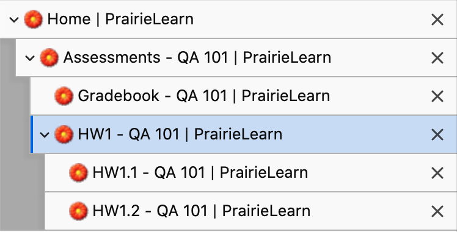

Thanks to the work of David Mitchell (Illinois CS '21), web pages in PrairieLearn now have descriptive titles. For everyone who like to have lots of tabs open, this means you won't be faced with a set of identical "PrairieLearn" pages. Instead, you can immediately see what each page contains:
